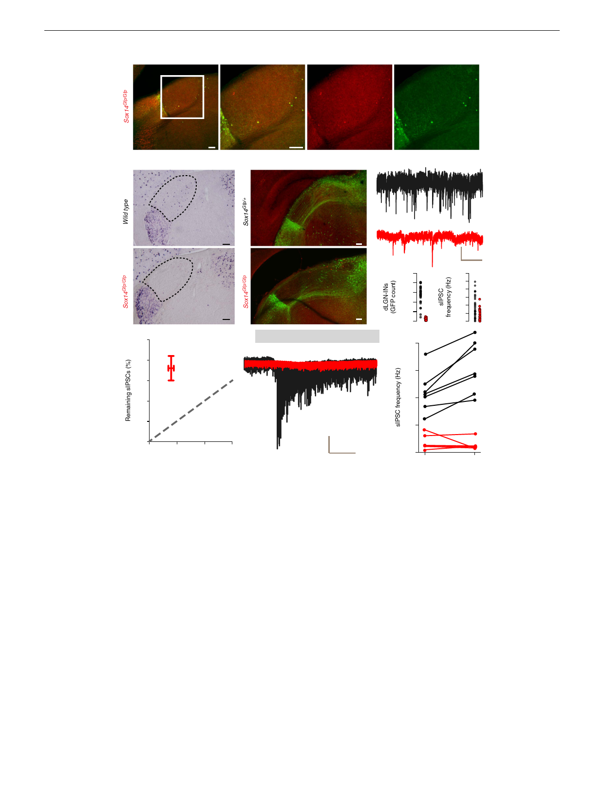

ARTICLE
a
GABA/GFP
1
1
NATURE COMMUNICATIONS | DOI: 10.1038/ncomms13579
GABA
GFP
dLGN
vLGN IGL
dLGN
P21
b
Gad1
Pretectum
c
aCasp3/GFP
d
Pretectum
Sox14Gfp/+
dLGN
IGL
12 weeks
vLGN
P1
Pretectum
dLGN
IGL
vLGN
Pretectum
g 50
40
dLGN
IGL
vLGN
Sox14Gfp/Gfp
dLGN
IGL
vLGN
h 50 μM DHPG
Sox14Gfp/Gfp
30
Sox14Gfp/Gfp
e
200
160
120
80
40
0
10 pA
1 s
f 12
10
8
6
4
2
0
i
Sox14Gfp/+
20
15
20
10
Sox14Gfp/+
10
5
Sox14Gfp/Gfp
0
0
10
20
30
Remaining cells (%)
100 pA
50 s
0
Control
DHPG
Figure 2 | Sox14 þ cells provide GABAergic drive to thalamic relay neurons. (a) Panel of images taken from a knockout Sox14Gfp/Gfp mouse illustrating
the large reduction in GABA-positive Sox14 neurons in the dLGN. Scale bar, 100 mm. (b) Two ISH images comparing the distribution of Gad1 mRNA (GAD67
enzyme) in a wild-type (Sox14 þ / þ ) and a Sox14 knockout (Sox14Gfp/Gfp) mouse. Note the absence of Gad1 in the dLGN of the Sox14 knockout. Scale bar,
100 mm. (c) Images demonstrating similar low levels of immunolabelling for aCasp3 in the dLGN of Sox14Gfp/ þ wild-type and Sox14Gfp/Gfp knockout brains.
Scale bar, 100 mm. (d) Example current traces during whole-cell recordings from a relay neuron taken from a Sox14Gfp/ þ wild-type or a Sox14Gfp/Gfp
knockout mouse. (e) Scatter plots for the number of GFP-positive neurons identified in brain slices prepared from either wild-type Sox14Gfp/ þ (black
circles) or knockout Sox14Gfp/Gfp mice. (f) Scatter plots for the spontaneous IPSC (sIPSC) frequency measured in dLGN-INs prepared from either wild-type
Sox14Gfp/ þ (black circles) or knockout Sox14Gfp/Gfp (red circles) mice. (g) A scatter plot comparing the proportion of remaining GFP-positive cells versus
the average frequency of sIPSCs recorded from relay neurons in knockout Sox14Gfp/Gfp mice (mean±s.e.m.). (h) Two superimposed current traces used to
compare the impact of 50 mM DHPG on tonic and phasic inhibition recorded from a wild-type Sox14Gfp/ þ relay neuron (black trace) and a knockout
Sox14Gfp/Gfp dLGN relay neuron. Note the clear absence of any response in the knockout Sox14Gfp/Gfp dLGN relay neuron. (i) Scatter plot of the DHPG-
induced change in sIPSC frequency for all relay neurons recorded from wild-type Sox14Gfp/ þ (black circles) and knockout Sox14Gfp/Gfp mice (red circles).
The solid lines link measurements made from individual relays neurons before and after application of DHPG.
Residual GABAergic drive following removal of dLGN-INs.
The loss of dLGN-INs from the Sox14Gfp/Gfp mice did not result
in complete removal of spontaneous IPSCs (sIPSCs) from dLGN
relay neurons, most likely due to the maintenance of GABA
release from RTN terminals. Nonetheless, sIPSC frequency was
reduced (Po0.005, unpaired t-test) from 3.6±0.5 Hz (n ¼ 31
cells, 11 mice) in Sox14Gfp/ þ mice to 1.3±0.2 Hz (n ¼ 36 cells, 6
mice) in Sox14Gfp/Gfp mice (Fig. 2d). Therefore, Sox14 þ dLGN-
INs make a significant contribution to GABAergic drive onto
thalamic relay neurons (Fig. 2f), and our data could suggest that
RTN terminals provide 30% of the spontaneous GABA release
onto thalamic relay neurons, at least in the acute slice preparation
(Fig. 2g).
To confirm that the remaining sIPSCs observed in the thalamic
relay neurons of Sox14Gfp/Gfp mice originated from RTN
terminals we took advantage of the fact that the F2 terminals
formed by dLGN-INs are confined within the glomerular
arrangement of the thalamic triad. The metabotropic glutamate
receptor (mGluR) agonist (S)-3,5-dihydroxyphenylglycine
(DHPG) is known to increase the rate of vesicular GABA release
from dLGN-IN terminals35,40, and 50 mM DHPG significantly
increased (Po0.005, paired t-test) the IPSC frequency from
4
NATURE COMMUNICATIONS | 7:13579 | DOI: 10.1038/ncomms13579 | www.nature.com/naturecommunications